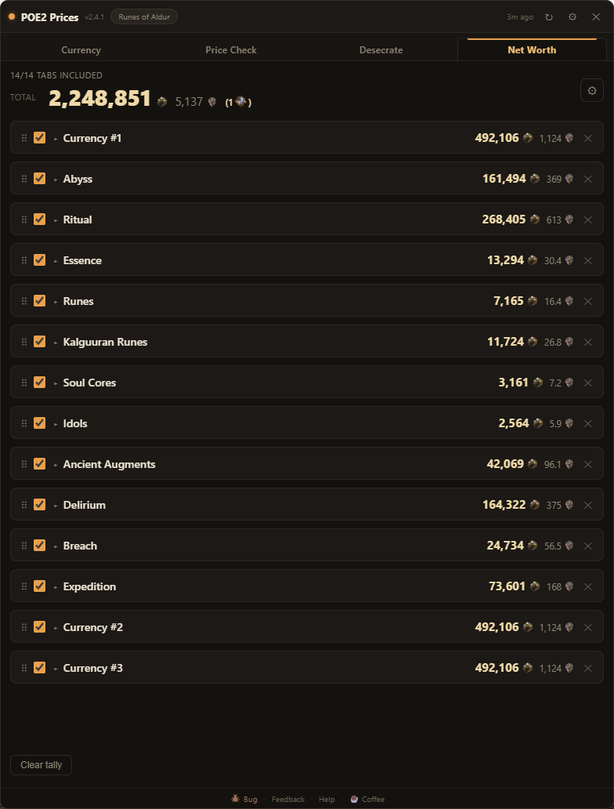

New here? Run the tutorial first.
The first time you open the overlay, a short guided tour walks you through the core tabs - building a currency bucket, then spotlighting the Price Check and Desecrate tabs on a demo item. Want a refresher, or just one tab? Open ⚙ Settings → Help & About → Replay tutorial and pick a section any time. This FAQ covers the same ground in depth - including the Net Worth tab below - tap a question to expand it.
Price Check
Hover an item in game and press Ctrl+F: it is parsed, filtered, and priced against live trade listings. It matches on the item's value - fungible rolls, total resistance, defences - rather than exact mod text. How that works:

How do I price-check an item?
Hover the item in game and press your price-check hotkey (default Ctrl+F). The overlay opens with the item parsed and priced, and stays until you hide it. Ctrl+Alt+F is a quick check that hides itself the moment your mouse leaves the overlay - so you can glance and get straight back to the game, then quick-check the next item without clicking back in.
No overlay open, or pricing from outside the game? Copy any item with Ctrl+C and Ctrl+V paste it onto the Price Check tab.
What does FUNGIBLE mean on a mod?
Some rolls are interchangeable, and pricing them as if they must match exactly would hide half the market. Added elemental damage to attacks is the clearest case: for most builds, added fire, cold, and lightning damage are the same thing. So the app does not demand your exact elements on comparables - it treats them as one pool and ranks by the combined total.
You can make other mods fungible too, or group them yourself, from a mod's ⋮ menu.
How do resistances become one PSEUDO line?
Nobody prices a resistance item element by element - they price the total. The trade site has "pseudo" stats for exactly this, and the app uses the real ones. Every resistance line on your item folds into a single +N% total Resistance pseudo:
- each single resistance adds its value;
- +X% to all Elemental Resistances counts as 3X (it is three resistances);
- a dual like +X% to Lightning and Chaos Resistances counts as 2X (two resistances);
- chaos resistance is included in the total.
When your item has any chaos resistance, a second +#% to Chaos Resistance pseudo rides along with an empty minimum. It just requires chaos to exist on a comp (the amount is your call) - because chaos res is scarce and a comp that has it is strictly better competition. The individual resistance lines stay folded and off beneath the pseudo; expand them and flip one on any time you want to search a specific element instead.
How does it pick the comps it prices against?
Two items with overlapping mods are not always the same product. A rare ring can be a spell-damage ring, an attribute stacker, or a life/res ring - all on the same base, all matching a loose search. Lumping them together gives a garbage price.
So the app builds a profile of your item - its damage types and the shape of its stats - and ranks the genuine comparables first: a spell-damage ring beside other spell-damage rings, an added-elemental glove beside other added-elemental gloves, rather than whatever merely matched your filters.
The suggested floor then anchors on the cheapest of those genuine comparables - and for weapons it reads total DPS, where price scales steeply, so an item trailing a cheaper high-DPS one is priced below it, not above. Hover the floor for the short receipt of which listing it anchored on and why. This matters most where one base rolls wildly different builds: rings, gloves, and weapons.
Every mod is a filter - min, max, sliders, and presets
Each mod line is a search filter. The number shown is the minimum the search uses; the range in brackets is the roll range for that tier, and the slider spans every tier the mod can roll. By default only the minimum is set (never a maximum - a max would hide better items), lowered slightly so you see a real band of comps, not just exact matches.
- tier min - set every mod to the lowest roll of its own tier (Divine Orbs reroll within a tier, so the tier matters more than the exact number);
- exact roll - the strictest search: comps must match or beat your item on every line;
- ↻ reset - back to the item as parsed.
Turn a line off to ignore it, type a max to bracket a roll, or + Add a mod to search for one the item does not have yet (a desecrate target, a craft you are planning). Unique items search a band-scaled minimum so you are not matching every copy ever dropped.
Sockets, catalyst quality, DPS and other properties
Above the mods sit the item's properties - the numbers the game computes, which mod filters can't express:
- Armour / Evasion / Energy Shield / Runic Ward, normalized to 20% quality, with empty rune sockets valued as Greater Iron Runes;
- Item level, quality and Augmentable Sockets are range filters in the header, each defaulted to your item's own value - so a 2-socket item is not priced against 1-socket ones;
- weapons search total DPS (and physical / elemental DPS) rather than each damage line;
- catalyst quality on jewellery is read and applied, so a ring whose resistances read high because of a catalyst is priced on its real, boosted numbers.
The Miscellaneous section (corrupted / crafted / fractured)
Fracturable stats roll perfectly, so the failed attempts - corrupted, crafted, unfractured versions of the same item - flood the market cheaply and drag a good item's price down. The Miscellaneous accordion is the trade site's own filters: toggle Corrupted, Crafted, Desecrated, Fractured, Twice Corrupted, Sanctified, Mirrored to Yes/No so those junk comps drop out of your comparison.
It also holds Listings, which defaults to Instant Buyout - the same as the in-game Market. This is important: the wider options include old stash-tab listings that are often months stale and already sold, and since results sort cheapest-first, one dead listing can become your suggested price. Instant Buyout prices you against what you can actually buy right now.
What does the hover comparison card show?

Hover any result and the app compares it to your item for you, instead of making you read two lists:
- every shared mod shows a green +X when your roll wins, red −X when the listing beats you;
- Quality, the defence totals (Energy Shield / Armour / Evasion / Runic Ward), Total Resistance and Sockets are totalled next to yours - the aggregates that don't belong on any single line;
- crafted (blue), desecrated (green), and fractured (tan) lines use the game's own colours, so you can see how a comp was made.
Click a result to pin its card so it stays while you read; whisper-copy is one click from the card.
Desecrate
Re-rolling a desecrated slot with Omens of Light is hard to price out - odds, bones, omens, annulments and echoes all stack up. The Desecrate tab works out the expected profit per route, and a plain verdict.

What is the Desecrate tab, and the redesecrate? button?
Any item with a desecrated modifier shows a green redesecrate? link in the corner of its Price Check card. It opens the Desecrate tab, which answers one question: is spamming Omens of Light to re-roll that mod worth the currency? You can also copy any item straight onto the tab.
A cycle is: an Omen of Light + Orb of Annulment strips the desecrated mod, then a bone offers three fresh picks on that slot - and an Omen of Abyssal Echoes re-rolls a whiffed set, for six looks per cycle.
How does the expected-value math work?
You tell it what a win looks like; it does the probability and the money.
- Pick your hits - tick the outcomes you would happily keep, and the worst tier you would accept for each. Every possible outcome on that slot is weighted by its real spawn chance, so "a hit" means an outcome you would actually stop on, not just any change.
- Values - the app auto-prices your item as it stands, and with a hit (one search over your ticked set), or you can type either. Costs autofill from live exchange rates and are fully editable.
- Routes - it computes, per route: your chance of a hit per reveal, the expected bones to land one, the expected total cost, and the net EV - what you make (or lose) on average.
The green (or red) banner at the bottom is the bottom line: which route is best, and its expected profit.
Preserved, Ancient, and Altered routes
Different bones change the odds, so the app prices each:
- Preserved - any item level; the base gamble.
- Ancient - forces the re-rolled mod to level 40+, tilting the pool toward the higher tiers (usually the better route when you want a top-tier hit).
- Altered - accessories only; it rolls the otherworldly pool, and the app prices that pool directly, so the route's odds are worked out for you rather than typed in. Tick an otherworldly outcome and it flags the Altered bone.
Regular jewels desecrate through a single Preserved Cranium route (there is no Ancient or Altered Cranium), priced the same way. Abyssal Echoes (six looks per cycle instead of three) is assumed throughout, and its cost is folded into every route - it is consumed before the reveal, so it is a flat per-cycle cost, not an option.
Currency
Press F6 and live prices float over your game. Build buckets to watch the exchange, spot arbitrage loops, and track trends.

What is a bucket?
A bucket is a currency you want to buy - think of it as an "I WANT this" pile. The rows inside it are the currencies you could pay with. In the example above, each bucket is an Omen and the rows (Exalted, Chaos, Divine) are the ways to pay for it.
What do the numbers on each row mean?

Reading it left to right:
Name + badge - the pay currency. A green BEST badge marks the cheapest option with its edge over the next; a red −% on the others is how much more they cost.
7D trend - the pair's 7-day price sparkline and change (hover it in-app for day-by-day history).
Price (+ ratio) - how many of that currency equal 1 of the bucket's, from live data, with the whole-number ratio beneath, as Ange shows it.
Vol - how much of the pair is actually trading; thin pairs are flagged and kept out of arbitrage routes.
Arb % - green, shown when a profitable trade loop exists from that row.
✎ pencil - on hover, click to type your own rate for that pair (see manual rates below).
A ⚠ next to a ratio means that pair's trade data is lagging a fast market - trust the main price and verify in game.
What is the green BEST row?
The row highlighted green with a BEST badge is the cheapest way to buy the bucket's currency right now. Its (+%) shows the edge over the next-best option; red (−%) badges on the other rows show how much more each alternative costs.
What is the green arb %?
A profitable loop from that row - shown only when every leg is tradable now and it clears +2%. Hover for the trades in order, click to pin it. From a pinned route you can ✎ fix any leg's rate to the number you see in game, and copy the whole route to chat.
What are manual rates?
Feed data can lag. In Settings → Rates (or the blue ✎ on any row),
each grey cell shows the live rate; type over it as Ange shows it - fractions like 1/4 and ratios
like 1:4 work - to override that pair (it turns blue). Blank cells stay live. Your rates
drive the arbitrage math, so filling the grid sharpens every route.
Why would I exclude Exalted from arbitrage?
Ange charges gold per unit traded, not per value. Because Exalted is low-value, a loop that routes through it moves thousands of units and drains your gold. Settings has a checkbox to skip Exalted as an intermediate hop when building routes.
Net Worth
Open a currency tab in game and press F7. The app screenshots it, reads the item counts on your PC, prices each one, and keeps a running grand total across every tab you add.

What is the Net Worth tab?
It adds up what's in your currency tabs. Open one in game, press your capture hotkey (default F7), and the app takes a screenshot, reads the item counts from it, prices each item off the same live data the rest of the app uses, and adds that tab to a running grand total. Capture your other currency tabs and they stack up into one number.
The total shows in Exalted and Divine, and once you cross a Mirror of Kalandra in value, a Mirror count rides along in brackets.
Which stash tabs does it read?
The currency tabs: Currency, Abyss, Ritual, Essence, all five Rune subtabs (Runes, Kalguuran Runes, Soul Cores, Idols, Ancient Augments), Delirium, Breach and Expedition. Open the tab you want, make sure the whole panel is on screen, and press the hotkey.
Toggling tabs and rows, and fixing a misread
Everything in the tally is yours to adjust:
- Toggle a whole tab in or out of the grand total with its checkbox, or a single row within a tab;
- Drag tabs to reorder them, and turn on duplicates in settings to keep separate rows for two of the same tab type (handy if you split, say, currency across multiple tabs);
- Edit any count inline - click the number and type the right one. The reader isn't perfect, and some item icons sit right over the number and obscure it.
Turn on Show OCR confidence % in settings to see how sure each read was - anything under ~80% is worth a glance. There's also Show missing / unread items, which lists empty or unread slots as editable ×0 lines so you can fill in anything the scan missed.
It's reading the wrong numbers / my resolution is different
The reader assumes the game is fullscreen at 1920×1080 or larger - that's where the item counts have enough pixels to read cleanly. On a smaller window or a different resolution, open ⚙ Settings → Net Worth → Calibrate for my resolution: it walks you through framing the stash panel once, snaps to it, and remembers the calibration. You only do it once per resolution.
Even calibrated, the odd count can misread - that's what inline editing and the confidence % are for.
Does capturing my stash send my screen anywhere?
No. The screenshot is taken and read entirely on your PC and is never saved, uploaded, or transmitted. To price what it read, the app looks up the item names and counts the same way the rest of the app prices things - it never sends the image, your account, or your session. Full details on the Privacy page.
General
How do I move, resize, or re-key the overlay?
Drag the title bar to move it, drag the edges to resize. Press your hotkey (F6 by default) to show/hide, or Esc to hide. Change the hotkey and the UI scale in Settings.
Where do the prices come from?
Currency rates come from GGG's official Currency Exchange data - real executed trades - topped with the live trade-site order book for the pairs on your screen, so numbers match what you can actually execute. Item price checks search the official trade site. The community poe2scout.com API supplies icons, history and fallback. No game memory hooks - it is just an overlay window reading public data. Your game must be in Windowed or Windowed Fullscreen mode.
Is logging in safe? How are credentials handled?
The app never sees your password. Logging in (optional - it unlocks exact weighted item searches) opens pathofexile.com's own login page in a sandboxed window: credentials go directly to GGG (or Steam, with 2FA working normally) over HTTPS, and the page has no access to the app, nor the app to the page.
All the app keeps is the resulting session cookie, stored OS-encrypted on your machine (the same mechanism Chrome uses) and sent only to pathofexile.com. It never leaves your computer. This is the identical trust model to being logged into the trade site in your browser - and the whole app is open source, so you can verify every line.
I found a bug / have an idea.
Use the Bug or Feedback buttons in the overlay's footer - they submit straight to us (bug reports include a short activity log to help us debug). Thank you!